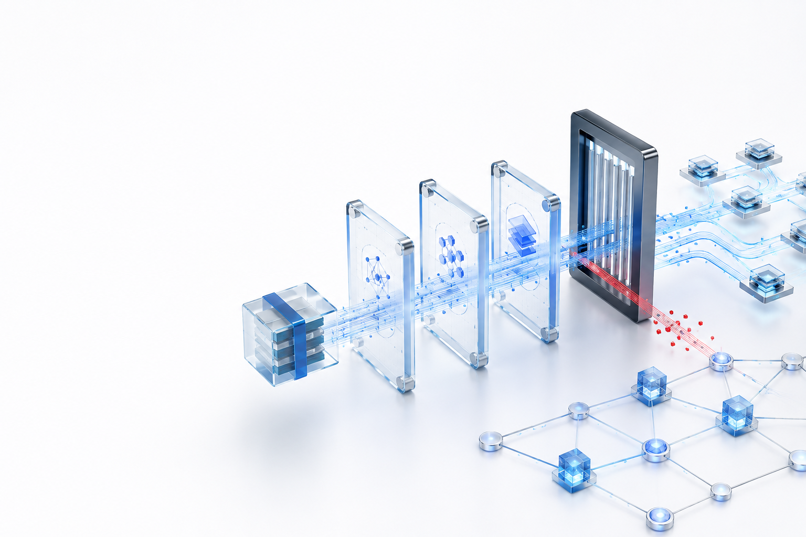
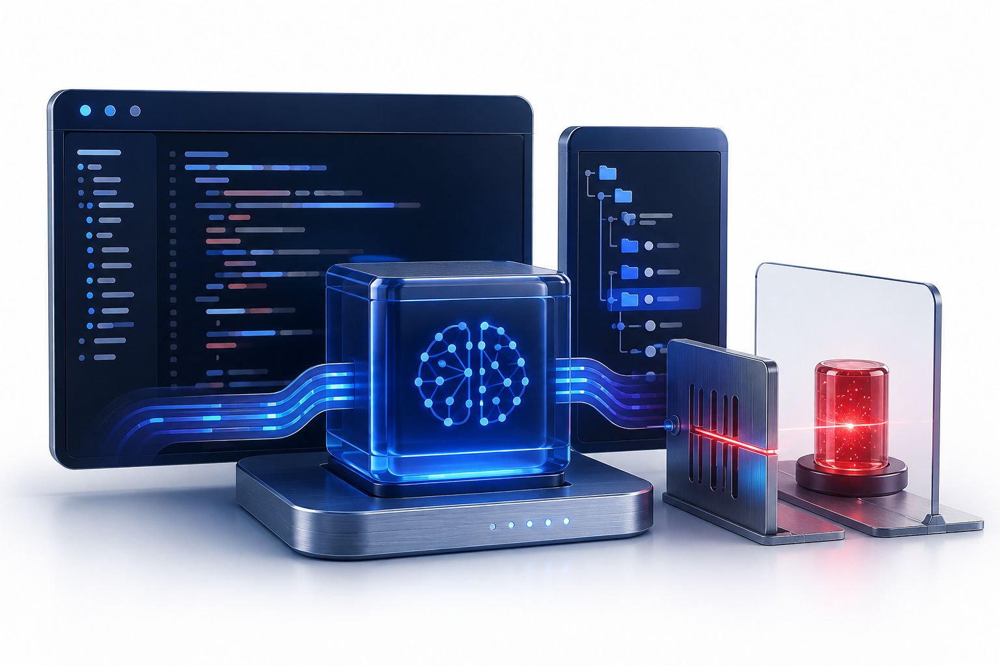
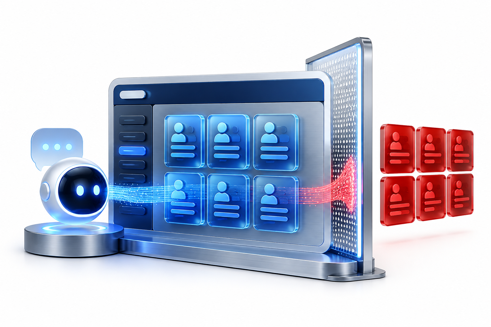
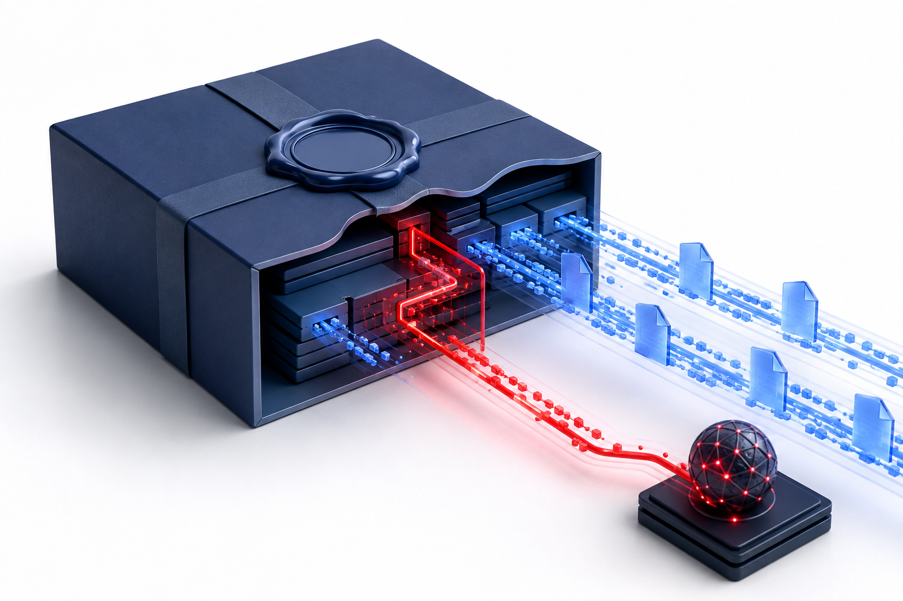
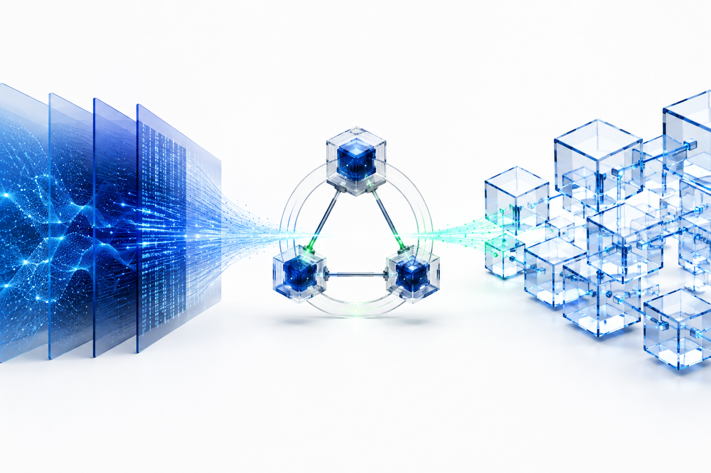

회사 메일 업무
메일 MCP업데이트된 도구가 메일 내용이나 비밀값을 외부로 보낼 수 있다.
MCPShield유출 행동을 찾아 실행 전에 막는다.

AI가 외부 도구를 사용하기 전에
안전 여부를 확인하고 위험하면 차단하는 보안 시스템
업데이트된 도구가 메일 내용이나 비밀값을 외부로 보낼 수 있다.

도구가 프로젝트의 .env 파일이나 API 키에 몰래 접근할 수 있다.

도구가 업무에 필요한 범위보다 많은 고객정보를 조회할 수 있다.
AI는 도구 설명을 읽고 어떤 기능을 실행할지 결정한다. 설명이 바뀌면 행동도 달라질 수 있다.
공격자는 정상 업데이트처럼 보이는 새 버전에 숨은 지시와 과도한 권한을 넣을 수 있다.
게시자 확인과 파일 서명만으로는 업데이트 후 실제로 무엇을 하는지 확인하기 어렵다.

메일 전송, 코드 수정, 고객 조회를 AI에게 요청한다.
AI가 업무에 필요한 MCP 도구를 선택한다.
MCPShield가 이전 버전과 행동 변화를 비교한다.
검증자 세 명 중 두 명 이상이 결과를 승인한다.
안전하면 실행하고, 위험하면 프로그램이 켜지기 전에 막는다.
| 평가 기준 | Registry / 서명 | 일반 로컬 스캐너 | MCPShield |
|---|---|---|---|
| 정확한 릴리스 식별 | 게시자·패키지 중심 | 제품별 상이 | artifact + tool surface hash |
| description 의미 변화 | 범위 밖 | 규칙 또는 LLM 단일 분석 | 버전 diff + 근거 span |
| 코드의 실제 행동 | 범위 밖 | 로컬 검사 결과 | 격리 실행 + canary 관찰 |
| 여러 조직의 공동 판정 | 단일 게시자·로그 | 로컬 또는 벤더 DB | EIP-712 2-of-3 정족수 |
| 에이전트 실행 강제 | 클라이언트에 위임 | 경고에서 종료 가능 | Gateway가 spawn 전 fail closed |
스캔 → 검증자 2명 PASS → VERIFIED → Gateway가 정상 도구 실행 결과 표시
canary 유출 감지 → 검증자 2명 FAIL → REVOKED → Gateway가 프로세스 생성 전에 차단
세션은 메모리에서 분리되고 15분 뒤 만료된다. 업로드와 외부 대상 입력을 받지 않으며 모든 데이터는 합성 fixture다.
| 계층 | 핵심 기술 | 역할과 구현 상태 |
|---|---|---|
| Security · AI | Node.js 정적 규칙 · structured JSON · sandbox observer · canary | 현재 구현 · 의미 변화와 유출 증거 정규화 |
| Blockchain | Solidity · EIP-712 · 2-of-3 ReleaseRegistry | 로컬 EVM 구현 · Base Sepolia는 최종 배포 목표 |
| Backend | Fastify · TypeScript · SQLite projection · PostgreSQL migration | 현재 구현 · 릴리스, 스캔, 투표, admission API |
| Gateway | Node.js stdio proxy · artifact policy · runtime surface guard | 현재 구현 · fail closed와 pre-spawn 차단 |
| Frontend · Delivery | Next.js · Docker Compose · Railway · GitHub Actions | 공개 배포 · 무설치 Judge Lab과 재현 스크립트 |
npm 또는 OCI로 배포되는 로컬 stdio MCP를 우선 지원한다. 모든 원격 MCP와 모든 악성 코드를 보증한다는 과장은 하지 않는다.

description과 코드의 목적 불일치, 권한과 데이터 범위의 의미 확장을 근거와 함께 찾는다.
release·policy·report hash를 묶고, 검증자 3명 중 2명의 서명으로 VERIFIED 또는 REVOKED를 확정한다.
| 담당자 | 역할 | 책임과 산출물 | 주요 기술 · GitHub |
|---|---|---|---|
| 이름 입력 A | Security · AI | 위협모델, 정적·AI 분석, fixture, sandbox 증거, 탐지 평가 | Node.js · LLM JSON · Docker @GitHub 입력 |
| 이름 입력 B | Blockchain · Backend | API, 데이터 모델, Solidity, EIP-712 검증자, indexer | TypeScript · Solidity · EVM @GitHub 입력 |
| 이름 입력 C | Frontend · Gateway · DevOps | 대시보드, stdio Gateway, 실행 전 차단, Docker, CI, 공개 데모 | Next.js · Node.js · Railway @GitHub 입력 |